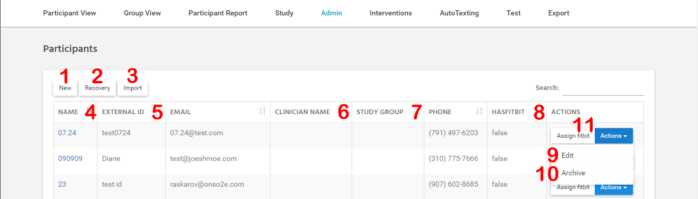
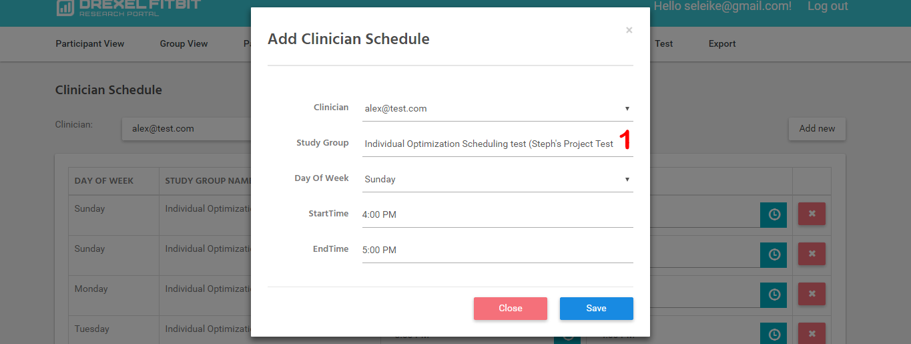

Administration¶
Role Description¶
Master - nак как на портале отключена регистрация, то для первоначального создания пользователей создан специальный аккаунт - master account. Данный аккаунт обладает теми же привилегиями что и Administrator, но не может быть удален или изменен.
- Administrator - обладает полным доступом ко всем функциям портала:
- Просмотр, создание и редактирование данных всех Study
- Просмотр, создание и редактирование настроек Interventions
- Просмотр, создание и редактирование расписания Clinician
- Просмотр, создание и редактирование пользователей (включая Administrators)
- Просмотр, создание и редактирование автоматических текстов
- Просмотр данных ВСЕХ Participant
- Export
- Report
Note
В данный момент любой Administrator может добавить или заархивировать другого Administrator.
Clinician – роль с ограниченными возможностями.
- Ограничения:
- Не может добавлять и редатировать пользователей.
- Просматривать данные Participants не входящих в группы в которых является руководителем.
- Просмотр, создание и редактирование настроек Interventions (уточнить)
- Просмотр, создание и редактирование данных всех Study (уточнить)
- Просмотр, создание и редактирование автоматических текстов (уточнить)
- Export (уточнить)
- Report (уточнить)
Participant – данные пользователи в данный момент не имеют возможности авторизации на портале. Являются объектами для обработки данных.
Administrators¶
Управление пользователями с ролью Administrator осуществляется на странице Administrators.

Figure 1 - Administrators Page Interface
- Описание Administrators Page Interface:
- Создание нового пользователя
- Востановление заархивированных ранее пользователя
- Редактирование выбранного пользователя
- Архивирование выбраного пользователя
Clinicians¶
Управление пользователями с ролью Clinician осуществляется на странице Clinicians.
Figure 2 - Clinicians Page Interface
- Описание Clinicians Page Interface:
- Создание нового пользователя
- Востановление заархивированных ранее пользователя
- Редактирование выбранного пользователя
- Архивирование выбраного пользователя
Participants¶
Управление пользователями с ролью Participant осуществляется на странице Participants.

Figure 3 - Participants Page Interface
- Описание Participants Page Interface:
- Создание нового пользователя
- Востановление заархивированных ранее пользователя
- функция импорта (массового добавления пользователя)
- Поля имени пользователя, так же является ссылкой на страницу Participant View (LINK!)
- Поле ExternalId, может содержать любое значение однозначно индетифицируещее пользователя или ничего
- Координатор Study Group в которой состоит пользователя
- Название Study Group в которой состоит пользователя, также является ссылкой на Group View (LINK!)
- Показывает привязан ли данному пользователя аккаунт Fitbit
- Редактирование выбранного пользователя
- Архивирование выбраного пользователя
- Привязка аккаунта Fitbit к выбраному пользователя
- Окно для управления аккунтом Fitbit данного Participant.


{kind=link}
Figure 4 - Fitbit Assinging Window
- Описание Fitbit Assinging Window:
- Показывает привязан ли Fitbit аккаунт
- Ссылка для перехода на сайт Fitbit для акторизации данного пользователя
- Ссылка так же может быть сгенерирована и отображена в окне
- Отображение сгенерированной ссылки
- Добавить извещение о успегном создании сабсрипшена
Clinician Schedule¶
Управление расписанием Clinician осуществляется на странице Clinician Schedule.
{kind=link}
Figure 5 - Clinician Schedule Page Interface
- Описание Clinician Schedule Page Interface:
- Выбор пользователя для редактирования
- Добавления нового правила для определенной Study Group
- Данное поле отображает для какой Study Group создано расписание
- Эллемент для удаления расписание для определенных Study Group, удаление стандарного расписания недоступно
- Поля показывающее время начала и конца временного периода, который готов потратить Clinicain в отпереленный день недели
Note
Время конца периода не может превышать время начала периода, также периоды не должны пересекаться с другими периодами для этого дня.
{kind=link}
Figure 6 - Окно добавления расписания для Study Group
- Описание Окна добавления расписания для Study Group:
- В окне добавления расписания в поле выбора Study Group отображаются только те Study Group для которых Clinician является координатором
User Recovery¶
На портале мы не удаляем данные и пользователей, поэтому любой заархивированный пользователей позднее может быть востановлен.
Note
Заархивированные пользователи не имеют возможности авторизоваться на портале, а также не отображатся на портале.
{kind=link}
Figure 6 - Окно востановления пользователей